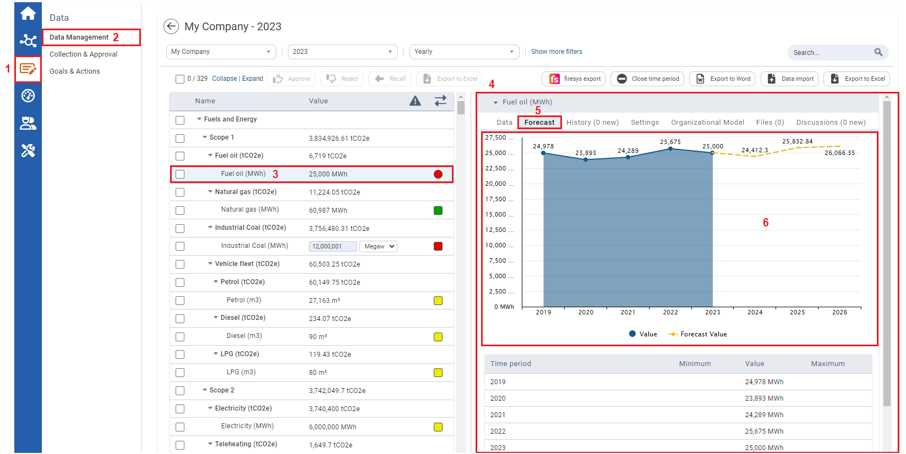

Visually being able to view forecasted performances of KPIs in charts, can help users to view and compare forecasted tp actual KPI performances.
Prior to viewing forecasted performances of KPIs in a chart, the Data Forecast Tool needs to be enabled (see Enabling the Data Forecast Tool), the forecasting time periods needs to be set up (see Time Periods), an then adjustments to the Data Forecast Settings are to be made by users based on their needs (see Adjusting Data Forecast Settings).

| 1 | On the left navigation panel, click Data. |
| 2 | Click Data Management. |
| 3 | Click a KPI. |
| 4 | Details of the KPI will display to the right. |
| 5 | Click the Forecast tab. |
| 6 |
The data displayed on the graph will be based on the Selected Time Periods inputted in the Forecast settings page. In the Forecast settings panel, a minimum of three years needs to be inputted. |